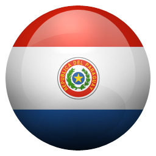

¿Sabías que BIOCROS contiene un ARSENAL de vitaminas para la energía?
Observa cuidadosamente la tabla nutricional a continuación.
Fenilalanina
Contiene fenilalanina, que activa las células cerebrales. Eleva los niveles de hemoglobina en la sangre. Ayuda a eliminar dolores musculares, óseos y dolor de cabeza.
Con vitaminas del complejo B!
Contiene en su arsenal vitaminas del complejo B, B1-B2-B6-B9-B12 que ayuda a la producción de energía y a mejorar síntomas del cansancio, somnolencia y estados de animo.
Con la poderosa Glicina!
La glicina puede evitar que los músculos se descompongan al aumentar el nivel de creatina en el cuerpo, lo cual ayuda a los musculos a desempeñarse mejor en actividaddes de alta intensidad, como levantar pesas o correr. Sin mencionar que ayuda a la regeneracion de los huesos.
Con Minerales Zinc, Cromo y Cobre
Son micronutrientes esenciales que regulan numerosos procesos metabólicos generando energia corporal y cuya deficiencia produce anormalidades fisiológicas y estructurales
El Potente antioxidante Taurina!
La Taurina si se acompaña
el consumo con dosis significativas de ácido fólico y de vitamina C, consigue reducir la
sintomatología de la depresión, así como el riesgo de desarrollar la enfermedad,
por eso los excelentes resultados de cambio de ánimo con BIOCROS! Favorece un correcto
descanso, al mismo tiempo que disminuye la ansiedad. Apto para Diabeticos ya que el aminoácido taurina puede ayudar a mantener estables las glucemias sanguíneas.
Cafeína
La cafeína tiene muchos efectos sobre el metabolismo de su cuerpo. Esta: Estimula el sistema nervioso central, lo que puede hacer que usted se sienta más despierto y le dará un impulso de energía.
¿Quieres comprar directamente desde la pagina web? Selecciona la bandera de tu país y rellena el formulario!
Regístrate como Cliente Admirable
¡Es muy fácil y es Gratis!
Haz
clic en la bandera de tu país, llena el formulario con tus datos y listo! Ya
puedes empezar a comprar todos los productos que necesitas directamente a fábrica
sin intermediarios!
ARGENTINA
BOLIVIA
BRASIL
CHILE
COLOMBIA
COSTA RICA
ECUADOR
EL SALVADOR
ESPAÑA
GUATEMALA
MÉXICO
NICARAGUA
HONDURAS
PANAMÁ

PARAGUAY
PERÚ
REPUBLICA DOMINICANA
ESTADOS UNIDOS
URUGUAY
RUSIA
UNION EUROPEA
Al
finalizar tu registro, recibirás un correo bienvenida como Cliente Admirable Omnilife
como confirmación de parte de la compañía y desde ese momento ya puedes comprar
tus productos Omnilife y Seytú, pagarlos a tu conveniencia y recibirlos en la
comodidad de tu casa donde quiere que estés sin intermediarios!